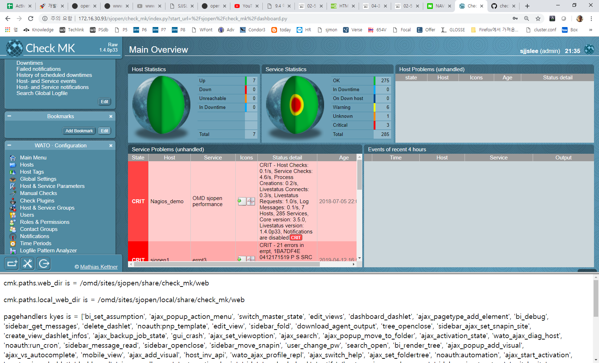

Check_MK 플러그인 초기화 과정 분석, load_web_plugins()
Check_MK 플러그인들이 초기화되는 과정, load_web_plugins() -> plugin dir 초기화
- index.py 모듈의 handler() 함수가 처음 config 를 초기화 하면서 load_web_plugins()을 호출하면 Pugins 디렉토리에 있는 .py 파일들이 실행되면서 초기화된다.
- Pugins 디렉토리 아래의 py 파일들이 실행되면서 딕셔너리 및 데이터들이 설정된다.
- 어떤 소스를 완벽하게 분석하려면 그 소스를 직접 짜는 것보다 더 뛰어난 실력이 있어야 가능하며 시간은 그 소스를 직접 짜는 것보다 조금쯤 덜 걸린다.
- 프로그램을 개발하다보면 문서화 작업이 소홀할 때가 있다. 나중에 문서화해야지 하고 마음 먹어보지만 그것도 쉽지 않은 일이다.
- 결국 시간이 좀 걸리긴 하나 프로그램 개발과 문서화 작업은 병행해야 한다.
n. index.py 파일의 handler() 함수의 page_handlers() 호출 과정
def handler(mod_python_req, fields = None, is_profiling = False):
-> modules.load_all_plugins()
-> def load_all_plugins()
-> pagehandlers.update(pagetypes.page_handlers())
-> page_handlers.update(page_type.page_handlers())
pagetypes.py 파일의 pagehandlers.update() 메소드가 빈 딕셔너리를 update 해서 내용을 채운다.
# index.py uses the following function in order to complete its
# page handler table
def page_handlers():
page_handlers = {}
for page_type in page_types.values():
page_handlers.update(page_type.page_handlers())
# Ajax handler for adding elements to a container
# TODO: Shouldn't we move that declaration into the class?
page_handlers["ajax_pagetype_add_element"] = lambda: OverridableContainer.ajax_add_element()
n. 실제로 호출되는 plugin file 이름을 추적해보자..
index.py
-> config.initialize() -> config.load_config()
-> load_plugins(true) -> load_web_plugins("config",
globals()) -> lib.py -> load_web_plugins -> execfile
-> cmk.paths.local_web_dir + "/plugins/" + forwhat
dashboard.py -> load_web_plugins("dashboard", globals()) -> lib.py -> load_web_plugins -> execfile ->
/omd/sites/sjopen/share/check_mk/web/plugins/dashboard/builtin.py (데시보드 제목, 위치 등에 대한 데이터 딕셔너리)
/omd/sites/sjopen/share/check_mk/web/plugins/dashboard/dashlets.py (실제로 화면에 보여주는 내용)
n. dashboard 플러그인 분석
- CMV 에서 view 에 해당하는 코드, 브라우저에 리턴할 HTML 코드를 작성한다.
/omd/sites/sjopen/share/check_mk/web/plugins/dashboard/dashlets.py
def dashlet_overview(nr, dashlet):
html.open_table(class_="dashlet_overview")
html.open_tr()
html.open_td(valign="top")
html.open_a(href="https://mathias-kettner.com/check_mk.html")
html.img("images/check_mk.trans.120.png", style="margin-right: 30px;")
html.close_a()
html.close_td()
html.open_td()
html.h2("Check_MK Multisite")
html.write_html('Welcome
to Check_MK Multisite. If you want to learn more about Multisite,
please visit '
'our
<a
href="https://mathias-kettner.com/checkmk_multisite.html">online
documentation</a>. '
'Multisite
is part of <a
href="https://mathias-kettner.com/check_mk.html">Check_MK</a> -
an Open Source '
'project
by <a href="https://mathias-kettner.com">Mathias
Kettner</a>.')
html.close_td()
html.close_tr()
html.close_table()
n. plugin 파일을 로드하는 코드 분석
- plugin 을 통해서 URL 을 헨들러를 맵핑하는 route 기능이 구현된다.
lib.py
# Load all files below share/check_mk/web/plugins/WHAT into a
# specified context (global variables). Also honors the
# local-hierarchy for OMD
# TODO: Couldn't we precompile all our plugins during packaging to make loading faster?
# TODO: Replace the execfile thing by some more pythonic plugin structure. But this would
# be a large rewrite :-/
def load_web_plugins(forwhat, globalvars):
for plugins_path in [ cmk.paths.web_dir + "/plugins/" + forwhat,
cmk.paths.local_web_dir
+ "/plugins/" + forwhat ]:
if not os.path.exists(plugins_path):
continue
for fn in sorted(os.listdir(plugins_path)):
file_path = plugins_path + "/" + fn
if
fn.endswith(".py") and not os.path.exists(file_path + "c"):
execfile(file_path, globalvars)
elif fn.endswith(".pyc"):
code_bytes
= file(file_path).read()[8:]
code = marshal.loads(code_bytes)
exec code in globalvars
n. mod_python 에서 실제로 생성된 객체 확인(index.py 에서 테스트 코드로 확인했음)
cmk.paths.web_dir is = /omd/sites/sjopen/share/check_mk/web
cmk.paths.local_web_dir is =/omd/sites/sjopen/local/share/check_mk/web
/omd/sites/sjopen/share/check_mk/web/plugins
config cron dashboard icons metrics pages perfometer sidebar userdb views visuals wato webapi
/omd/sites/sjopen/local/share/check_mk/web/plugins/
config dashboard icons metrics pages perfometer sidebar views visuals wato
==> ALL ZERO
n. 데시보드 제목 수정하기
- 딕셔너리 Value 를 직접 수정해준다.
/omd/sites/sjopen/share/check_mk/web/plugins/dashboard/builtin.py
builtin_dashboards["main"] = {
"single_infos": [],
"context" : {},
"mtime" : 0,
"show_title" : True,
"title" : _("IBM KTS Nagios Monitoring!!!, Main Overview"),
"topic" : _("Overview"),
"description" : _("This dashboard gives you a general overview on the state of your "
"monitored
devices."),
"dashlets" : [
{
"title" :
_("Host Statistics"),
"type" :
'hoststats',
"position" : (1, 1),
"refresh" : 60,
"show_title" : True,
'context' : {
'wato_folder': {
'wato_folder':
'',
}
},
'single_infos' : [],
},

n. index.py 파일에 디버그 코드를 추가하기
- 파일로 저장한 다음 하단 프레임에 표시하면 mod_python 내부 정보를 확인할 수 있다.
# Get page handler.
handler = modules.get_handler(html.myfile, page_not_found)
f1 = open("/omd/sites/sjopen/share/check_mk/web/htdocs/bottom.html", 'w')
f1.write("<p>cmk.paths.web_dir
is = " + cmk.paths.web_dir + "</p>\n")
f1.write("<p>cmk.paths.local_web_dir
is = " + cmk.paths.local_web_dir + "</p>\n")
f1.write("<p>pagehandlers
kyes is = " + str(modules.pagehandlers.keys()) + "</p>\n")
f1.write("<p>pagehandlers
values is = " + str(modules.pagehandlers.values()) + "</p>\n")
f1.close()
n. index.py 에서 사용하는 sys.path() 조회
f1 = open("/omd/sites/sjopen/share/check_mk/web/htdocs/bottom.html", 'w')
f1.write("cmk.paths.web_dir is = " + cmk.paths.web_dir + "<br>\n")
f1.write("cmk.paths.local_web_dir
is = " + cmk.paths.local_web_dir + "<br>\n")
f1.write("<p>pagehandlers
kyes is = " + str(modules.pagehandlers.keys()) + "</p>\n")
#
f1.write("<p>pagehandlers values is = " +
str(modules.pagehandlers.values()) + "</p>\n")
f1.write("<p>" + str(dir()) + "</p>\n")
f1.write("<p>\n")
for i in sys.path:
f1.write(i + "<br>\n")
f1.write("</p>\n")
f1.close()
cmk.paths.web_dir is = /omd/sites/sjopen/share/check_mk/web
cmk.paths.local_web_dir is = /omd/sites/sjopen/local/share/check_mk/web
pagehandlers
kyes is = ['bi_set_assumption', 'ajax_popup_action_menu',
'switch_master_state', 'edit_views', 'dashboard_dashlet',
'ajax_pagetype_add_element', 'bi_debug', 'sidebar_get_messages',
'delete_dashlet', 'noauth:pnp_template', 'edit_view', 'sidebar_fold',
'download_agent_output', 'tree_openclose',
'sidebar_ajax_set_snapin_site', 'create_view_dashlet_infos',
'ajax_backup_job_state', 'gui_crash', 'ajax_set_viewoption',
'ajax_search', 'ajax_popup_move_to_folder', 'ajax_activation_state',
'wato_ajax_diag_host', 'noauth:run_cron', 'sidebar_message_read',
'sidebar_openclose', 'sidebar_move_snapin', 'user_change_pw',
'search_open', 'bi_render_tree', 'ajax_popup_add_visual',
'ajax_vs_autocomplete', 'mobile_view', 'ajax_add_visual',
'host_inv_api', 'wato_ajax_profile_repl', 'ajax_switch_help',
'ajax_set_foldertree', 'noauth:automation', 'ajax_start_activation',
'create_view_dashlet', 'dashboard', 'ajax_userdb_sync',
'automation_login', 'side', 'crashed_check', 'notify',
'host_service_graph_popup', 'sidebar_ajax_tag_tree', 'switch_site',
'sidebar_add_snapin', 'download_crash_report', 'ajax_reschedule',
'graph_dashlet', 'ajax_popup_icon_selector', 'index',
'ajax_set_rowselection', 'version', 'bookmark_lists',
'edit_bookmark_list', 'add_bookmark', 'ajax_delete_user_notification',
'edit_dashboards', 'sidebar_ajax_speedometer', 'webapi', 'wato',
'user_profile', 'bi', 'clear_failed_notifications', 'bi_save_treestate',
'edit_dashboard', 'logout', 'edit_dashlet', 'werk', 'login',
'ajax_dashlet_pos', 'sidebar_ajax_tag_tree_enter',
'ajax_inv_render_tree', 'mobile', 'logwatch', 'prediction_graph',
'create_view', 'export_views', 'create_view_infos',
'wato_ajax_execute_check', 'sidebar_snapin', 'count_context_button',
'guitest_reschedule_all', 'view', 'create_dashboard']
['f1', 'fields', 'handler', 'is_profiling', 'mod_python_req', 'response_code']
/omd/sites/sjopen/local/share/check_mk/web/htdocs
/omd/sites/sjopen/share/check_mk/web/htdocs
/omd/versions/1.4.0p33.cre/lib/python
/omd/sites/sjopen/lib/python
/omd/sites/sjopen/local/lib/python
/omd/sites/sjopen/lib/python/MySQL_python-1.2.5-py2.7-linux-x86_64.egg
/omd/sites/sjopen/lib/python/cffi-1.11.5-py2.7-linux-x86_64.egg
/omd/sites/sjopen/lib/python/asn1crypto-0.24.0-py2.7.egg
/omd/sites/sjopen/lib/python/dnspython-1.15.0-py2.7.egg
/omd/sites/sjopen/lib/python/netifaces-0.10.6-py2.7-linux-x86_64.egg
/omd/sites/sjopen/lib/python/paramiko-2.1.2-py2.7.egg
/omd/sites/sjopen/lib/python/cryptography-1.9-py2.7-linux-x86_64.egg
/omd/sites/sjopen/lib/python/ipaddress-1.0.22-py2.7.egg
/omd/sites/sjopen/lib/python/enum34-1.1.6-py2.7.egg
/omd/sites/sjopen/lib/python/idna-2.5-py2.7.egg
/omd/sites/sjopen/lib/python/psutil-5.2.0-py2.7-linux-x86_64.egg
/omd/sites/sjopen/lib/python/psycopg2-2.6.2-py2.7-linux-x86_64.egg
/omd/sites/sjopen/lib/python/pyOpenSSL-16.2.0-py2.7.egg
/omd/sites/sjopen/lib/python/pymssql-2.1.3-py2.7-linux-x86_64.egg
/omd/sites/sjopen/lib/python/ply-3.10-py2.7.egg
/omd/sites/sjopen/lib/python/pysnmp-4.3.5-py2.7.egg
/omd/sites/sjopen/lib/python/pycryptodome-3.4.5-py2.7-linux-x86_64.egg
/omd/sites/sjopen/lib/python/pysmi-0.1.0-py2.7.egg
/omd/sites/sjopen/lib/python/pyasn1-0.2.3-py2.7.egg
/omd/sites/sjopen/lib/python/pysphere-0.1.7-py2.7.egg
/omd/sites/sjopen/lib/python/python_ad-0.9-py2.7.egg
/omd/sites/sjopen/lib/python/python_dateutil-2.6.1-py2.7.egg
/omd/sites/sjopen/lib/python/python_ldap-2.4.32-py2.7-linux-x86_64.egg
/omd/sites/sjopen/lib/python/reportlab-3.3.0-py2.7-linux-x86_64.egg
/omd/sites/sjopen/lib/python/pip-9.0.1-py2.7.egg
/omd/sites/sjopen/lib/python/Pillow-3.4.2-py2.7-linux-x86_64.egg
/omd/sites/sjopen/lib/python/requests_kerberos-0.11.0-py2.7.egg
/omd/sites/sjopen/lib/python/pykerberos-1.1.14-py2.7-linux-x86_64.egg
/omd/sites/sjopen/lib/python/requests-2.13.0-py2.7.egg ==> Python에서 HTTP 요청을 보내고 응답을 받는 모듈
/omd/sites/sjopen/lib/python/setuptools-28.8.0-py2.7.egg
/omd/sites/sjopen/lib/python/setuptools_git-1.1-py2.7.egg
/omd/sites/sjopen/lib/python/simplejson-3.10.0-py2.7-linux-x86_64.egg
/omd/sites/sjopen/lib/python/six-1.10.0-py2.7.egg
/omd/sites/sjopen/lib/python/tinkerforge-2.1.11-py2.7.egg
/omd/sites/sjopen/lib/python/py_rrdtool-0.2.2-py2.7-linux-x86_64.egg
/omd/sites/sjopen/lib/python/netsnmp_python-1.0a1-py2.7-linux-x86_64.egg
/omd/sites/sjopen/lib/python27.zip
/omd/sites/sjopen/lib/python2.7
/omd/sites/sjopen/lib/python2.7/plat-linux2
/omd/sites/sjopen/lib/python2.7/lib-tk
/omd/sites/sjopen/lib/python2.7/lib-old
/omd/sites/sjopen/lib/python2.7/lib-dynload
/omd/sites/sjopen/lib/python2.7/site-packages